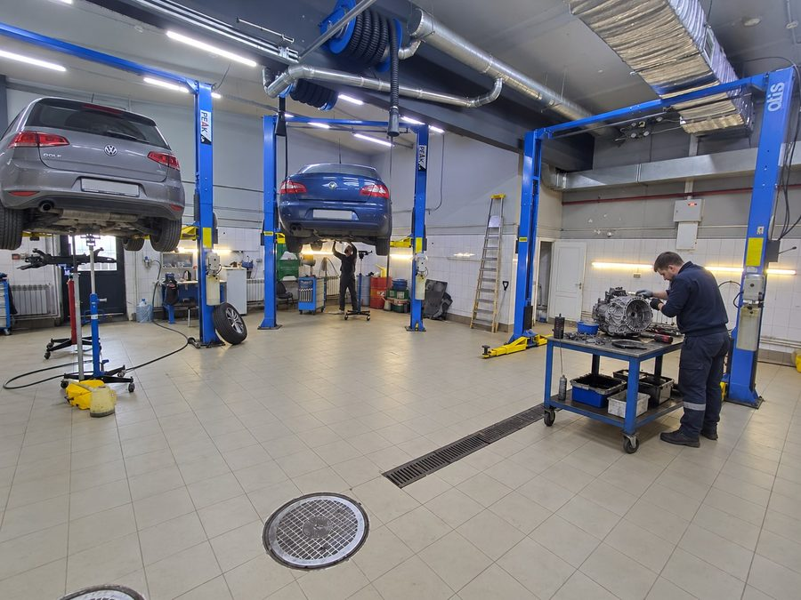
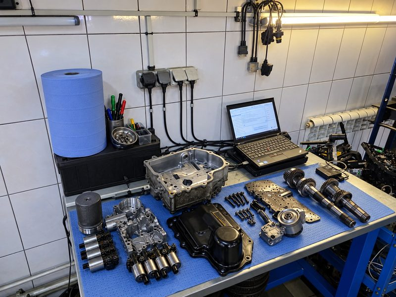
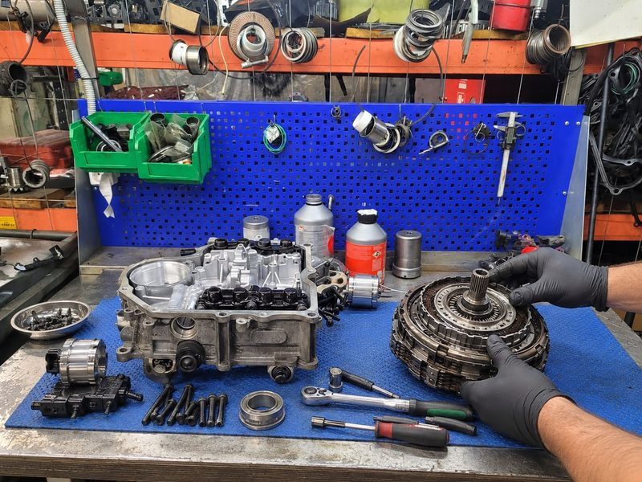

Диагностика
Проверим ошибки, параметры и поведение коробки. Объясним результаты понятным языком.
Volkswagen · Audi · Škoda · SEAT
Верните плавные переключения. Узнайте причину рывков и ошибок, получите понятную смету и решите, какие работы согласовать.
Посмотреть стоимость работ
DSG переключает передачи с помощью двух сцеплений, а управляет работой коробки мехатроник. Проверка помогает понять, что именно требует внимания.
Проверим ошибки, параметры и поведение коробки. Объясним результаты понятным языком.
Проверим управление и гидравлику. Согласуем восстановление узла или другие необходимые работы.
Оценим состояние сухого или мокрого сцепления. После замены выполним необходимые настройки.
Проверим источник стука и вибраций, чтобы избежать замены исправных деталей.
Подберём материалы и состав обслуживания по индексу вашей коробки.
Проверим валы, шестерни и подшипники. Объём разборки и ремонта обсудим заранее.
Не пытайтесь определить неисправность по одному симптому. Расскажите мастеру, когда и как он проявляется.
Толчки, дрожь или вибрация при трогании и движении в пробке.
Передача включается с паузой или машина реагирует непривычно.
Появилось предупреждение, пропала часть передач или включился аварийный режим.
Необычные звуки и запах — повод остановиться и обсудить доставку в сервис.

После проверки вам должно быть понятно, что неисправно, какие работы нужны и сколько они стоят.
Уточним автомобиль и условия, в которых появляются рывки или ошибка.
Проверим ошибки и параметры, объясним выводы по вашей коробке.
Обсудим состав работ, стоимость и сроки. Решение остаётся за вами.
Дополнительную разборку и работы
согласуем отдельно, до их начала.
Сухое и мокрое сцепление, поперечная и продольная компоновка требуют разных решений. Индекс уточним по данным автомобиля.
7 передач · сухое сцепление
6 передач · мокрое сцепление
7 передач · мокрое сцепление
7 передач · мокрое сцепление
7 передач · продольная S-Tronic
7 передач · продольная S-Tronic

До ремонта обсудим неисправность, необходимые детали и состав работ. Если после разборки обнаружится дополнительная проблема — сначала свяжемся с вами.
Начальные цены помогут сориентироваться. Точная смета зависит от индекса коробки и результатов диагностики.
| Работа | Стоимость |
|---|---|
| Диагностика DSG | Бесплатно |
| Масло и фильтр в мокрой DSG | от 9 900 ₽ |
| Ремонт мехатроника | от 14 900 ₽ |
| Замена сухого сцепления | от 29 900 ₽ |
| Замена мокрого сцепления | от 34 900 ₽ |
| Замена двухмассового маховика | от 19 900 ₽ |
| Адаптация коробки | от 1 500 ₽ |
| Ремонт механической части | от 32 900 ₽ |
Не знаете, какая работа нужна?
Начните с описания симптомов.
О диагностике, вариантах ремонта и условиях для вашего автомобиля.
Это названия семейств роботизированных коробок с двумя сцеплениями в автомобилях Volkswagen Group. Конструкция и состав работ зависят от конкретного индекса агрегата, поэтому сначала уточняем данные автомобиля.
Назовите марку, модель, год и двигатель. При необходимости мастер попросит VIN или проверит данные диагностикой. Самостоятельно искать индекс коробки необязательно.
Нет. Похожие симптомы могут быть связаны с разными узлами и настройками. Сначала проверим ошибки и рабочие параметры, затем объясним причину и предложим состав работ.
Решение о ремонте остаётся за вами. Сначала обсуждаем результаты проверки и смету. Если для уточнения причины потребуется отдельная разборка или дополнительная операция, согласуем её заранее.
Это зависит от симптомов. Если пропали передачи, появились сильные удары, утечка или запах перегрева, остановитесь в безопасном месте и свяжитесь с мастером. Можно обсудить бесплатный эвакуатор до 100 км.
Срок и покрытие зависят от вида ремонта. До начала работ обсудим условия для вашего автомобиля, а после ремонта передадим документы с согласованными условиями.
Доступна рассрочка на 4 месяца без процентов. Условия оформления и график платежей обсуждаются до начала ремонта.
Назовите автомобиль и расскажите, что изменилось в работе коробки. Обсудим проверку, бюджет и удобный техцентр.
Пн–Пт 9.00–19.00 | Сб–Вс 9.00–20.00